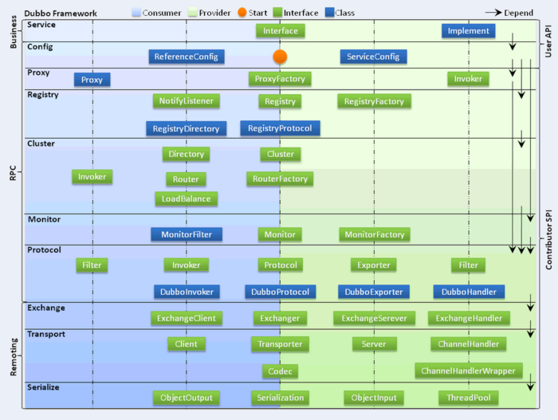
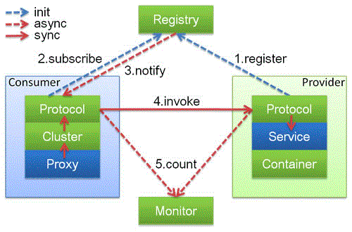
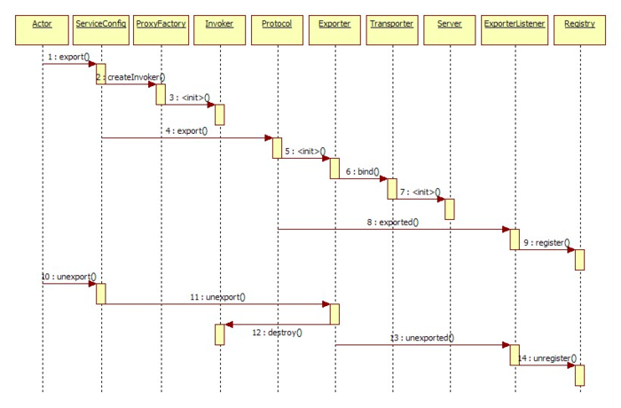
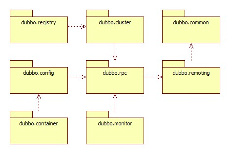

Dubbo源码架构
个人笔记，非原创博文
最顶层概念：要么是提供方（Provider）提供服务，要么是消费方（Customer）消费服务。
架构抽象图

架构图一说明
Dubbo框架设计一共划分了10个层，而最上面的Service层是留给实际想要使用Dubbo开发分布式服务的开发者实现业务逻辑的接口层。图中左边淡蓝背景的为服务消费方使用的接口，右边淡绿色背景的为服务提供方使用的接口， 位于中轴线上的为双方都用到的接口。
1.业务逻辑
服务接口层（Service）：该层是与实际业务逻辑相关的，根据服务提供方和服务消费方的业务设计对应的接口和实现。
2.RPC模块
- 配置层（Config）：对外配置接口，以ServiceConfig和ReferenceConfig为中心，可以直接new配置类，也可以通过spring解析配置生成配置类。
- 服务代理层（Proxy）：服务接口透明代理，生成服务的客户端访问入口和服务器端结构，以ServiceProxy为中心，扩展接口为ProxyFactory。
- 服务注册层（Registry）：封装服务地址的注册与发现，以服务URL为中心，扩展接口为RegistryFactory、Registry和RegistryService。可能没有服务注册中心，此时服务提供方直接暴露服务。
- 集群层（Cluster）：封装多个提供者的路由及负载均衡，并桥接注册中心，以Invoker为中心，扩展接口为Cluster、Directory、Router和LoadBalance。将多个服务提供方组合为一个服务提供方，实现对服务消费方来透明，只需要与一个服务提供方进行交互。同时这一层也是Dubbo体现服务治理的层面。
- 监控层（Monitor）：RPC调用次数和调用时间监控，以Statistics为中心，扩展接口为MonitorFactory、Monitor和MonitorService。
- 协议定义层（Protocol）：封将RPC调用，以Invocation和Result为中心，扩展接口为Protocol、Invoker和Exporter。Protocol是服务域，它是Invoker暴露和引用的主功能入口，它负责Invoker的生命周期管理。Invoker是实体域，它是Dubbo的核心模型，其它模型都向它靠扰，或转换成它，它代表一个可执行体，可向它发起invoke调用，它有可能是一个本地的实现，也可能是一个远程的实现，也可能一个集群实现。
3.远程调用协议
- 信息交换层（Exchange）：封装请求响应模式，同步转异步，以Request和Response为中心，扩展接口为Exchanger、ExchangeChannel、ExchangeClient和ExchangeServer。
- 网络传输层（Transport）：抽象mina和netty为统一接口，以Message为中心，扩展接口为Channel、Transporter、Client、Server和Codec
- 数据序列化层（Serialize）：可复用的一些工具，扩展接口为Serialization、 ObjectInput、ObjectOutput和ThreadPool。
额外说明
从上图可以看出，Dubbo对于服务提供方和服务消费方，从框架的10层中分别提供了各自需要关心和扩展的接口，构建整个服务生态系统（服务提供方和服务消费方本身就是一个以服务为中心的）。
- 在RPC中，Protocol是核心层，也就是只要有Protocol + Invoker + Exporter就可以完成非透明的RPC调用，然后在Invoker的主过程上Filter拦截点。
- 图中的Consumer和Provider是抽象概念，只是想让看图者更直观的了解哪些类分属于客户端与服务器端，不用Client和Server的原因是Dubbo在很多场景下都使用Provider、Consumer、Registry、Monitor划分逻辑拓普节点，保持统一概念。
- Cluster是外围概念，所以Cluster的目的是将多个Invoker伪装成一个Invoker，这样其它人只要关注Protocol层Invoker即可，加上Cluster或者去掉Cluster对其它层都不会造成影响，因为只有一个提供者时，是不需要Cluster的。如果有多个提供者时，那Cluster将是Dubbo服务治理的入口，所有的服务治理都从Cluster开始并且延续到更低层的Directory、Router、LoadBalance。
- Proxy层封装了所有接口的透明化代理，而在其它层都以Invoker为中心，只有到了暴露给用户使用时，才用Proxy将Invoker转成接口，或将接口实现转成Invoker，也就是去掉Proxy层RPC是可以Run的，只是不那么透明，不那么看起来像调本地服务一样调远程服务。
- Remoting实现是Dubbo协议的实现，如果你选择RMI协议，整个Remoting都不会用上，Remoting内部再划为Transport传输层和Exchange信息交换层，Transport层只负责单向消息传输，是对Mina、Netty、Grizzly的抽象，它也可以扩展UDP传输，而Exchange层是在传输层之上封装了Request-Response语义。
- Registry和Monitor实际上不算一层，而是一个独立的节点，只是为了全局概览，用层的方式画在一起。
核心要点
从上面的架构图中，我们可以了解到，Dubbo作为一个分布式服务框架，主要具有如下几个核心的要点：
1.服务定义
服务是围绕服务提供方和服务消费方的，服务提供方实现服务，而服务消费方调用服务。
2.服务注册
对于服务提供方，它需要发布服务，而且由于应用系统的复杂性，服务的数量、类型也不断膨胀；对于服务消费方，它最关心如何获取到它所需要的服务，而面对复杂的应用系统，需要管理大量的服务调用。而且，对于服务提供方和服务消费方来说，他们还有可能兼具这两种角色，即既需要提供服务，有需要消费服务。通过将服务统一管理起来，可以有效地优化内部应用对服务发布/使用的流程和管理。服务注册中心可以通过特定协议来完成服务对外的统一。Dubbo提供的注册中心有如下几种类型可供选择：
- Multicast注册中心
- Zookeeper注册中心
- Redis注册中心
- Default注册中心
3.服务监控
无论是服务提供方，还是服务消费方，他们都需要对服务调用的实际状态进行有效的监控，从而改进服务质量。
4.远程通信与信息交换
远程通信需要指定通信双方所约定的协议，在保证通信双方理解协议语义的基础上，还要保证高效、稳定的消息传输。Dubbo继承了当前主流的网络通信框架，主要包括如下几个：
- Mina
- Netty
- Grizzly
5.服务调用

服务调用过程
上图中，蓝色的表示与业务有交互，绿色的表示只对Dubbo内部交互。上述图所描述的调用流程如下：
- 服务提供方发布服务到服务注册中心；
- 服务消费方从服务注册中心订阅服务；
- 服务消费方调用已经注册的可用服务。
详细如图所示：

4.服务注册与注销

5.服务订阅与取消

6.协议支持
Dubbo支持自定义扩展协议，实现dubbo-rpc-api即可扩展出一种Dubbo支持的协议。Dubbo目前已实现的协议如下：
- Dubbo协议
- Hessian协议
- HTTP协议
- RMI协议
- WebService协议
- Thrift协议
- Memcached协议
- Redis协议
Dubbo模块图
Dubbo以包结构来组织各个模块，各个模块及其关系，如图所示：

- Dubbo-common 公共逻辑模块，包括Util类和通用模型。
- Dubbo-remoting 远程通讯模块，相当于Dubbo协议的实现，如果RPC用RMI协议则不需要使用此包。
- Dubbo-rpc 远程调用模块，抽象各种协议，以及动态代理，只包含一对一的调用，不关心集群的管理。
- Dubbo-cluster 集群模块，将多个服务提供方伪装为一个提供方，包括：负载均衡、容错、路由等，集群的地址列表可以是静态配置的，也可以是由注册中心下发。
- Dubbo-registry 注册中心模块，基于注册中心下发地址的集群方式，以及对各种注册中心的抽象。
- Dubbo-monitor 监控模块，统计服务调用次数，调用时间的，调用链跟踪的服务。
- Dubbo-config 配置模块，是Dubbo对外的API，用户通过Config使用Dubbo，隐藏Dubbo所有细节。
- dubbo-container 容器模块，是一个Standalone的容器，以简单的Main加载Spring启动，因为服务通常不需要Tomcat/JBoss等Web容器的特性，没必要用Web容器去加载服务。